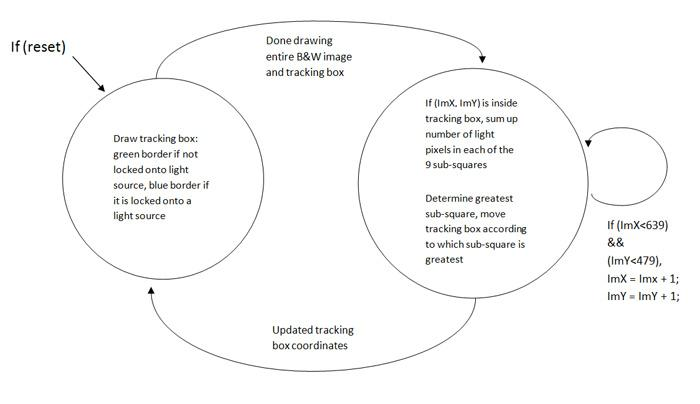

To track a laser/light source, we had a box that would search for a light source and once a light source is within the box, the box will lock onto the light source and then follow that particular light source. The dimension of our tracking box was 90 x 90 pixels with an initial green border. We detect a light source by determining how many pixels inside the tracking box are near white color. A near white color is defined as a pixel having its upper 10-bit value greater than 700. If there are more than 50 and less than 500 light pixels inside the tracking box, then it is a confirmed light source and the box will become locked on and the box's border will turn blue. We instantiated an upper bound to the total number of light pixels inside the tracking box so that the tracking box will not move if the light source is so large that it covers most or the entire tracking box area.
Since the image is in black and white, the same SRAM data is assigned to all three color channels. If the SRAM buffer is detected to have a red output, then the VGA red component is set to 10'd1023 while both of the other components are set to zero. The same is done displaying the other colors as shown in the code segment above. The VGA outputs pixels onto the screen only when there is either a horizontal or vertical sync.

The VGA Controller first draws the tracking box then finishes drawing the rest of the B&W image. Once the tracking box has locked onto a light source, the border switches from green to blue. Computations are then performed to detect if the light source is moving. To determine this, we subdivided the tracking box into nine smaller boxes with dimensions 30 x 30 pixels. The sum of 'light' pixels is calculated for each of these nine smaller boxes. The sum of the number of light pixels in the nine smaller boxes is then compared with each other to determine which box has the greatest number of light pixels. So if the upper left square has the most light pixels, the tracking box will shift upwards by 34 pixels and to the left by 34 pixels, which is essentially re-centering the box around the new light source. Table 2 below shows the number of pixels the tracking box will shift according to which square has the most light pixels. Once the tracking box has updated its position, the state machine starts all over again with the drawing of the tracking box in its new position.
Table 2:
For example, if a light source was first detected in Box 2 (as in Box 2 having more white light in it compared to all the other Boxes), the whole tracking box will shift one square up so that the light source is now located back in the center of the tracking box (Box 5). Now if the light was moved so that it now appeared in Box 9, then the whole square again will shift 1 right and 1 down to again re-center the light source.